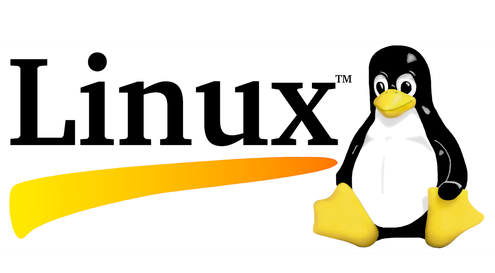

4.1.1 ¿Qué es Linux?

Linux es un sistema operativo creado en 1991. Linux es de código abierto, rápido, confiable y pequeño. Requiere muy pocos recursos de hardware para ejecutarse y tiene muchas opciones para ser personalizado. A diferencia de otros sistemas operativos, como Windows y Mac OS X, Linux fue creado por una comunidad de programadores que actualmente lo mantiene vigente. Linux es parte de varias plataformas y puede encontrarse en cualquier tipo de dispositivo, desde "relojes a supercomputadoras".
Otro aspecto importante de Linux es que está diseñado para conectarse a la red, lo que facilita mucho la escritura y el uso de aplicaciones con base en la red. Dado que Linux es de código abierto, cualquier persona o empresa puede obtener el código fuente del kernel, examinarlo, modificarlo y volver a compilarlo cuando lo desean. También pueden redistribuir el programa con o sin costo.
Una distribución de Linux es el término que se utiliza para describir paquetes creados por distintas organizaciones. Las distribuciones de Linux (o distros) incluyen el kernel de Linux con herramientas y paquetes de software personalizados. Si bien algunas de estas organizaciones pueden cobrar el soporte de su distribución de Linux (orientado a empresas con base en Linux), la mayoría también ofrece la distribución gratis sin soporte. Debian, Red Hat, Ubuntu, CentOS y SUSE son solo algunos ejemplos de distribuciones de Linux.
4.1.2 El Valor de Linux
Linux es, a menudo, el sistema operativo elegido en el Centro de Operaciones de Seguridad (SOC). Estos son algunos de los motivos para elegir Linux:
4.1.3 Linux en el SOC
La flexibilidad que proporciona Linux es una característica grandiosa para el SOC. Todo el sistema operativo se puede adaptar para convertirlo en la plataforma perfecta de análisis de seguridad. Por ejemplo, los administradores pueden agregar al sistema operativo solamente los paquetes necesarios para hacerlo rápido y eficiente. Es posible instalar y configurar herramientas de software específicas para trabajar en conjunto, lo que les permite a los administradores crear una computadora personalizada que se adapta perfectamente al flujo de trabajo de un SOC.
La figura muestra Sguil, que es la consola de analista de ciberseguridad en una versión especial de Linux llamada Cebolla de Seguridad. La Cebolla de Seguridad es un conjunto de herramientas de código abierto que trabajan juntas para el análisis de seguridad de red. Trabajaremos con la Cebolla de Seguridad más adelante en este curso.

La tabla enlista algunas herramientas que suelen encontrarse en un SOC
| Herramientas SOC | Descripción |
|---|---|
| Software de captura de paquetes |
|
| Herramientas de análisis de Malware | Estas herramientas permiten al analista ejecutar y observar de manera segura el funcionamiento de un malware sin poner en riesgo el sistema subyacente. |
| Sistemas de detección de intrusiones (Intrusion detection systems, IDSs) |
|
| Firewalls | Este software se utiliza para especificar, según las reglas predefinidas, si el tráfico está permitido para entrar o salir de la red o dispositivo. |
| Administradores de registros |
|
| Administración de información y eventos de seguridad (SIEM) | SIEM proporciona análisis en tiempo real de alertas y entradas de registro generadas por dispositivos de red, como IDSs y Firewalls |
| Sistema de tiquetes | La tarea de asignación, edición y registro de tiquetes se realiza a través de un sistema de gestión de tiquetes Las alertas de seguridad a menudo se asignan a los analistas a través de un sistema de tiquetes. |
4.1.4 Herramientas de Linux
Además de herramientas específicas para el SOC, las computadoras de Linux utilizadas en el SOC suelen tener herramientas de pruebas de penetración. También conocida como PenTesting, una prueba de penetración es el proceso de atacar una red o computadora en busca de vulnerabilidades. Algunos ejemplos de herramientas de PenTesting son los generadores de paquetes, los escáneres de puertos y los ataques de prueba de concepto.
Kali Linux es una distribución de Linux agrupa muchas herramientas de penetración juntas en una sola distribución Linux. Kali contiene una amplia selección de herramientas. En la figura, se ve una captura de pantalla de Kali Linux. Observe todas las categorías principales de herramientas de pruebas de penetración.